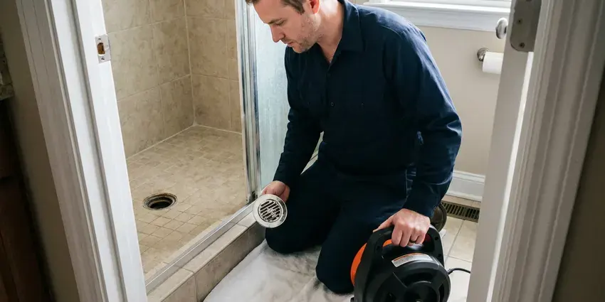
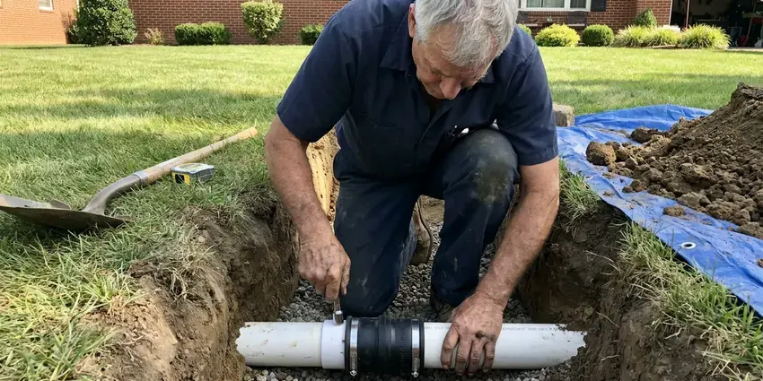

Hydro Jetting in Pahrump, NV
For tough blockages in Pahrump, NV that traditional methods can't clear, hydro jetting from FMR Plumbing is the answer.
- Removes Tough Buildup
- Pipe-Safe Pressure Settings
- Camera Inspection Before Jetting
- Prevents Future Clogs

Need Serious Drain Cleaning? Get Hydro Jetting Service in Pahrump, NV.
Contact FMR Plumbing today for dependable and efficient hydro jetting that gets your pipes flowing freely again.
High-Pressure Hydro Jetting in Pahrump, NV That Cleans the Whole Pipe
FMR Plumbing always runs a camera before jetting to check pipe material and condition. That way we can set the pressure and choose the nozzle that cleans well without harming older cast iron or clay.
Our expertise includes:
- High-pressure water jetting for all pipe sizes
- Preventative maintenance hydro jetting for businesses
- Pre and post jetting video inspection with recordings

Additional Drain Services Services in Pahrump, NV
From stubborn kitchen clogs to main sewer backups, our drain services in Pahrump, NV clear the line and keep it clear with camera-verified results.


Drain Cleaning near Pahrump


Pahrump sewer line replacement specialists


Customers
Why Choose FMR Plumbing for Hydro Jetting in Pahrump, NV?
We match the machine and nozzle to your pipe. Proper setup gives a deep clean while protecting older materials common in many homes.
- Preventative Care, Regular hydro jetting can prevent future clogs and lengthen the life of your plumbing system.
- Full-Wall Cleaning, Jetting scrubs the pipe circumference instead of leaving a narrow channel through the clog.
- Deep Clean, Unlike traditional snaking, hydro jetting completely cleans pipe walls, removing all debris.
Citywide Coverage
Our jetting units serve every neighborhood in Pahrump, from tight older lots to commercial strips with long sewer runs. Cart jetters fit through side gates and into garages where a trailer cannot reach.
Experienced Team
Our team of licensed plumbers has extensive experience with hydro jetting, for effective and safe operation on your property. We are trained to assess pipe conditions using camera inspections before jetting, which is crucial for the many pipe materials found in Pahrump.
Safety-First Approach
Our equipment is regularly inspected and maintained for safe and efficient performance. We take every precaution, including a pipe camera inspection before jetting, to prevent any damage to your plumbing system.
Trusted Certified Pahrump Plumbing Services Professionals
At FMR Plumbing, we take pride in providing certified plumbing services throughout Pahrump, NV. Backed by recognized industry credentials, our experienced plumbers combine technical skill with genuine customer care. Whether it is repair, installation, or maintenance, we follow strict safety and quality standards to deliver long-lasting results you can trust.
Call Us Now PHCC Plumbing Contractor Recognition
PHCC Plumbing Contractor Recognition Better Business Bureau (BBB) Accreditation
Better Business Bureau (BBB) Accreditation Angi Certified Pro
Angi Certified Pro ISO 9001 Quality Management Certification
ISO 9001 Quality Management CertificationAdvanced Hydro Jetting Solutions in Pahrump, NV
Hydro Jetting vs. Snaking Cost Comparison in Pahrump, NV
While snaking might be cheaper upfront for simple clogs, hydro jetting offers a more complete and long-lasting solution, often saving money in the long run for Pahrump, NV residents. Snaking usually punches a hole through a blockage, leaving residue behind, which can lead to recurring clogs. Hydro jetting cleans the entire pipe, preventing future issues and reducing the frequency of service calls, making it a more cost-effective choice for persistent drain problems.

Preventative Maintenance Hydro Jetting in Pahrump, NV
Proactive hydro jetting can save Pahrump, NV property owners from unexpected plumbing emergencies. For homes and businesses with a history of drain issues or those prone to specific types of buildup, scheduled hydro jetting is an excellent preventative measure. By regularly removing scale, grease, and other debris before they cause a full blockage, you can extend the life of your pipes, avoid costly repairs, and maintain consistent drainage. We can set up a tailored maintenance schedule for your needs.
Emergency Hydro Jetting in Pahrump, NV
A completely backed-up drain or sewer line requires immediate attention. FMR Plumbing offers emergency hydro jetting across Pahrump, NV, to address critical blockages quickly. Our technicians are available to respond fast, minimizing water damage and restoring your plumbing as soon as possible. We understand that some clogs just cannot wait.
Sewer Line Descaling with Hydro Jetting in Pahrump
Over time, mineral deposits and other materials can build up on the interior walls of sewer lines, forming a tough scale. This reduces pipe diameter and can lead to frequent clogs. Water in much of Nevada is very hard, and scale buildup is one of the most common reasons water heaters and fixtures fail early. Hydro jetting is the most effective method for sewer line descaling, using powerful water jets to break down and flush away these mineral deposits, restoring the pipe's full carrying capacity and slowing future buildup.
Sewer Line Hydro Jetting in Pahrump
When your main sewer line has a blockage, it can affect all the drains in your Pahrump home or business. Our sewer line hydro jetting service is equipped to clear even the most severe obstructions in these larger diameter pipes. We use high-definition cameras to inspect the line before and after jetting, confirming the blockage is completely removed and the pipe is clean. Clay soils that swell when watered and shrink when dry can stress slabs and buried drain lines over time.
Root Cutting With Hydro Jetting in Pahrump
Specialty root-cutting nozzles spin or use focused streams to slice through fine roots inside a sewer. This is useful on root hairs that a cable saw can leave behind. Roots from yard trees and shrubs often enter at clay pipe joints or cracks. Jetting clears them out and gives a clean view of each entry point on camera. That helps you decide whether lining or a spot repair is the right move.
Kitchen Line Grease Jetting in Pahrump, NV
Kitchen drains are the most common grease trouble spot in any home or restaurant. Grease clings to pipe walls and hardens, especially where the line runs flat under a slab. Jetting melts and scrubs this buildup away instead of just poking a hole through it. We use smaller hose and nozzles sized for 1-1/2 and 2 inch kitchen lines. This keeps your sink and dishwasher draining properly for much longer.

Preventive Maintenance Jetting in Pahrump
If your line has a history of clogs, a maintenance plan can keep it clear. We schedule jetting every 12 to 24 months for homes and more often for busy commercial kitchens. Regular cleaning prevents the buildup from ever reaching the point of a backup. It also gives us a chance to camera the line and spot new problems early. Maintenance customers get priority scheduling.
Hydro Jetting Near Me in Pahrump, NV
If you are searching for hydro jetting near me in Pahrump, NV, look no further than FMR Plumbing. Our local team is positioned to provide prompt and efficient service throughout the metro area. We understand the plumbing challenges of Nevada homes and businesses and are ready to handle your toughest drain issues.
Being local means we know which neighborhoods have older cast iron or clay pipe and which have newer PVC. That helps us choose safe pressure settings and the correct nozzle. It also means faster arrival times when you need help.
FMR Plumbing at a Glance
- Licensed and insured plumbers serving Pahrump, NV
- 24/7 emergency service with same-day scheduling
- Clear written estimates, no hidden fees
- 4.8-star rated by 903+ Nevada customers
Pahrump Map
Pahrump Information
- Population
- 44,738
- Area codes
- Local
- Service area
- Pahrump and communities within 40 miles
- Nearby
- Summerlin South, Las Vegas, Spring Valley, Enterprise
Mineral scale bonds with kitchen grease inside pipes, so hydro jetting is often the only way to restore full flow in older lines in Pahrump, NV. Water in much of Nevada is very hard, and scale buildup is one of the most common reasons water heaters and fixtures fail early.
Expert Services
Trust our professionals for reliable FMR Plumbing solutions in Pahrump, NV.
Our Specialized Plumbing Services in Pahrump, NV
At FMR Plumbing, we provide a complete range of plumbing services across Pahrump, NV. From leak detection to full system installations, our team ensures fast, precise, and affordable service for both residential and commercial properties. Explore our core services below:


How Our Hydro Jetting Process Works in Pahrump, NV
We follow a proven approach to deliver strong drain cleaning results every time we perform hydro jetting in Pahrump, NV.
Request a Quote
Call (725) 360-1766 to speak with our helpful team about your drain issues. We will gather initial information and schedule a convenient time for a professional assessment.
Pipe Inspection
Our technician will perform a detailed camera inspection of your pipes to identify the exact location and nature of the blockage. This step is crucial for safety and effectiveness.
Hydro Jetting
Using purpose-built nozzles and high-pressure water, we meticulously clean the pipe walls, breaking down and flushing out all obstructions and buildup.
Frequently Asked Questions About Hydro Jetting in Pahrump
The cost of hydro jetting in Pahrump, NV usually ranges from $300 to $800, depending on the severity of the clog, the length and diameter of the pipe, and ease of access. More complex jobs, like main sewer line descaling or extensive root removal, may be on the higher end. We provide a transparent quote after an initial inspection.
We use professional cart and trailer jetters along with rotating and root-cutting nozzles from established manufacturers. Color camera systems record the line before and after.
Usually, a permit is not required for standard hydro jetting aimed at clearing blockages in existing lines. However, if the hydro jetting is part of a larger repair or replacement project that alters the plumbing system, a permit from the local building department may be necessary. We will advise you if a permit is needed for your situation.
FMR Plumbing uses professional-grade hydro jetting equipment from established manufacturers like Spartan Tool and MyTana. These brands are known for their reliability, powerful performance, and safety features, so we can deliver the most thorough cleaning for your pipes.
Key signs you might need hydro jetting include regularly recurring clogs in the same drain, multiple slow drains throughout your home, persistent foul odors coming from drains, or gurgling sounds from toilets or drains. These often indicate a significant buildup or blockage that needs more than just a snake.
Most residential jobs take 1 to 3 hours including inspection. Long commercial lines or heavy grease can add time.
While small, low-pressure drain jetters are available for rent, professional hydro jetting equipment is far more powerful and requires training to operate safely and effectively. Improper use can damage pipes, cause injury, or fail to clear the blockage. For severe clogs, it is always best to call experienced professionals like FMR Plumbing.
For most modern and well-maintained pipes, hydro jetting is very safe. However, for very old, corroded, or severely damaged pipes, the high pressure could cause further damage. That is why FMR Plumbing always performs a camera inspection first to assess your pipe's condition and confirm hydro jetting is appropriate.
What People Are Saying About Our Plumbing Experts?

Sofia M.
Two new toilets installed in one visit, no mess left behind, and the tech even adjusted a faucet he noticed was dripping. Fair pricing and really friendly.
Toilet Installation · Winchester, NVLaura S.
I scheduled a water heater replacement, and the team made the process smooth and affordable. The new unit works perfectly, and they cleaned up after completing the job.
Water Heater Replacement · Enterprise, NV
Emily R.
I called FMR Plumbing for plumbing repair, and the technician was fast, polite, and thorough. They explained the problem clearly and fixed it the same day. I will definitely hire them again. Highly recommended!
Plumbing Repair · Enterprise, NV
James P.
Our commercial plumbing system had a leak under the sink, and FMR Plumbing handled it professionally. The plumbers arrived quickly and restored everything without disruption to our customers.
Commercial Plumbing · Las Vegas, NVRobert G.
The trenchless sewer replacement saved our front yard. They walked us through the camera inspection footage first so we knew exactly what we were paying for.
Sewer Line Replacement · Spring Valley, NV
Patricia H.
We had a slab leak that two other companies could not find. FMR Plumbing located it in under an hour, explained our options, and the price matched the quote to the dollar.
Slab Leak Repair · Pahrump, NV